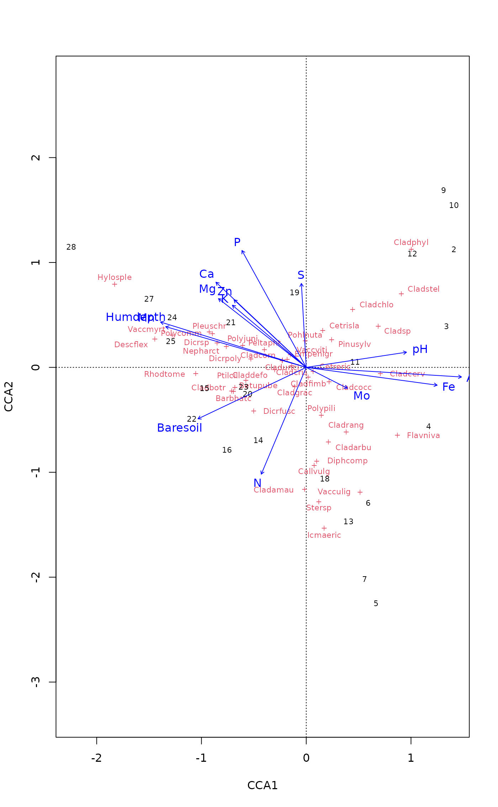
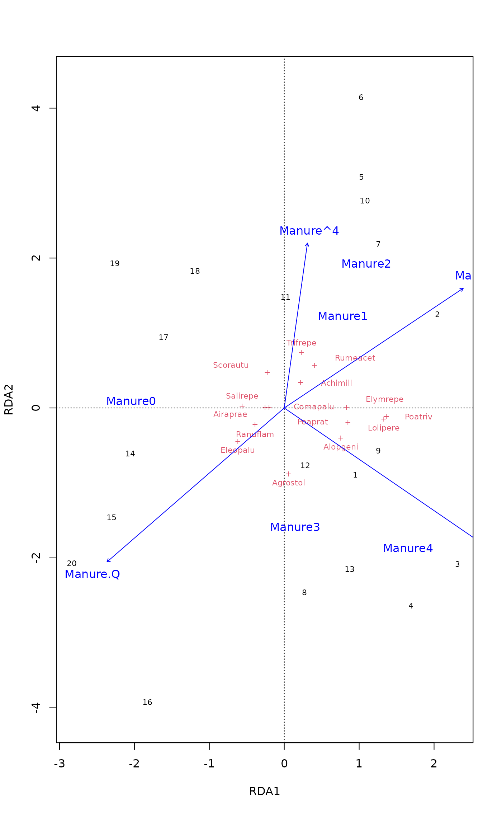

[Partial] [Constrained] Correspondence Analysis and Redundancy Analysis
cca.RdFunction cca performs correspondence analysis, or optionally
constrained correspondence analysis (a.k.a. canonical correspondence
analysis), or optionally partial constrained correspondence
analysis. Function rda performs redundancy analysis, or
optionally principal components analysis.
These are all very popular ordination techniques in community ecology.
# S3 method for formula cca(formula, data, na.action = na.fail, subset = NULL, ...) # S3 method for formula rda(formula, data, scale=FALSE, na.action = na.fail, subset = NULL, ...) # S3 method for default cca(X, Y, Z, ...) # S3 method for default rda(X, Y, Z, scale=FALSE, ...)
Arguments
| formula | Model formula, where the left hand side gives the
community data matrix, right hand side gives the constraining variables,
and conditioning variables can be given within a special function
|
|---|---|
| data | Data frame containing the variables on the right hand side of the model formula. |
| X | Community data matrix. |
| Y | Constraining matrix, typically of environmental variables.
Can be missing. If this is a |
| Z | Conditioning matrix, the effect of which is removed
(“partialled out”) before next step. Can be missing. If this is a
|
| scale | Scale species to unit variance (like correlations). |
| na.action | Handling of missing values in constraints or
conditions. The default ( |
| subset | Subset of data rows. This can be a logical vector which
is |
| ... | Other arguments for |
Details
Since their introduction (ter Braak 1986), constrained, or canonical,
correspondence analysis and its spin-off, redundancy analysis, have
been the most popular ordination methods in community ecology.
Functions cca and rda are similar to popular
proprietary software Canoco, although the implementation is
completely different. The functions are based on Legendre &
Legendre's (2012) algorithm: in cca
Chi-square transformed data matrix is subjected to weighted linear
regression on constraining variables, and the fitted values are
submitted to correspondence analysis performed via singular value
decomposition (svd). Function rda is similar, but uses
ordinary, unweighted linear regression and unweighted SVD. Legendre &
Legendre (2012), Table 11.5 (p. 650) give a skeleton of the RDA
algorithm of vegan. The algorithm of CCA is similar, but
involves standardization by row and column weights.
The functions can be called either with matrix-like entries for
community data and constraints, or with formula interface. In
general, the formula interface is preferred, because it allows a
better control of the model and allows factor constraints. Some
analyses of ordination results are only possible if model was fitted
with formula (e.g., most cases of anova.cca, automatic
model building).
In the following sections, X, Y and Z, although
referred to as matrices, are more commonly data frames.
In the matrix interface, the
community data matrix X must be given, but the other data
matrices may be omitted, and the corresponding stage of analysis is
skipped. If matrix Z is supplied, its effects are removed from
the community matrix, and the residual matrix is submitted to the next
stage. This is called partial correspondence or redundancy
analysis. If matrix
Y is supplied, it is used to constrain the ordination,
resulting in constrained or canonical correspondence analysis, or
redundancy analysis.
Finally, the residual is submitted to ordinary correspondence
analysis (or principal components analysis). If both matrices
Z and Y are missing, the
data matrix is analysed by ordinary correspondence analysis (or
principal components analysis).
Instead of separate matrices, the model can be defined using a model
formula. The left hand side must be the
community data matrix (X). The right hand side defines the
constraining model.
The constraints can contain ordered or unordered factors,
interactions among variables and functions of variables. The defined
contrasts are honoured in factor
variables. The constraints can also be matrices (but not data
frames).
The formula can include a special term Condition
for conditioning variables (“covariables”) partialled out before
analysis. So the following commands are equivalent:
cca(X, Y, Z), cca(X ~ Y + Condition(Z)), where Y
and Z refer to constraints and conditions matrices respectively.
Constrained correspondence analysis is indeed a constrained method:
CCA does not try to display all variation in the
data, but only the part that can be explained by the used constraints.
Consequently, the results are strongly dependent on the set of
constraints and their transformations or interactions among the
constraints. The shotgun method is to use all environmental variables
as constraints. However, such exploratory problems are better
analysed with
unconstrained methods such as correspondence analysis
(decorana, corresp) or non-metric
multidimensional scaling (metaMDS) and
environmental interpretation after analysis
(envfit, ordisurf).
CCA is a good choice if the user has
clear and strong a priori hypotheses on constraints and is not
interested in the major structure in the data set.
CCA is able to correct the curve artefact commonly found in correspondence analysis by forcing the configuration into linear constraints. However, the curve artefact can be avoided only with a low number of constraints that do not have a curvilinear relation with each other. The curve can reappear even with two badly chosen constraints or a single factor. Although the formula interface makes it easy to include polynomial or interaction terms, such terms often produce curved artefacts (that are difficult to interpret), these should probably be avoided.
According to folklore, rda should be used with ``short
gradients'' rather than cca. However, this is not based
on research which finds methods based on Euclidean metric as uniformly
weaker than those based on Chi-squared metric. However, standardized
Euclidean distance may be an appropriate measures (see Hellinger
standardization in decostand in particular).
Partial CCA (pCCA; or alternatively partial RDA) can be used to remove
the effect of some
conditioning or background or random variables or
covariables before CCA proper. In fact, pCCA compares models
cca(X ~ Z) and cca(X ~ Y + Z) and attributes their
difference to the effect of Y cleansed of the effect of
Z. Some people have used the method for extracting
“components of variance” in CCA. However, if the effect of
variables together is stronger than sum of both separately, this can
increase total Chi-square after partialling out some
variation, and give negative “components of variance”. In general,
such components of “variance” are not to be trusted due to
interactions between two sets of variables.
The functions have summary and plot methods which are
documented separately (see plot.cca, summary.cca).
Value
Function cca returns a huge object of class cca, which
is described separately in cca.object.
Function rda returns an object of class rda which
inherits from class cca and is described in cca.object.
The scaling used in rda scores is described in a separate
vignette with this package.
References
The original method was by ter Braak, but the current implementation follows Legendre and Legendre.
Legendre, P. and Legendre, L. (2012) Numerical Ecology. 3rd English ed. Elsevier.
McCune, B. (1997) Influence of noisy environmental data on canonical correspondence analysis. Ecology 78, 2617-2623.
Palmer, M. W. (1993) Putting things in even better order: The advantages of canonical correspondence analysis. Ecology 74,2215-2230.
Ter Braak, C. J. F. (1986) Canonical Correspondence Analysis: a new eigenvector technique for multivariate direct gradient analysis. Ecology 67, 1167-1179.
See also
This help page describes two constrained ordination functions,
cca and rda. A related method, distance-based
redundancy analysis (dbRDA) is described separately
(capscale). All these functions return similar objects
(described in cca.object). There are numerous support
functions that can be used to access the result object. In the list
below, functions of type cca will handle all three constrained
ordination objects, and functions of rda only handle rda
and capscale results.
The main plotting functions are plot.cca for all
methods, and biplot.rda for RDA and dbRDA. However,
generic vegan plotting functions can also handle the results.
The scores can be accessed and scaled with scores.cca,
and summarized with summary.cca. The eigenvalues can
be accessed with eigenvals.cca and the regression
coefficients for constraints with coef.cca. The
eigenvalues can be plotted with screeplot.cca, and the
(adjusted) \(R^2\) can be found with
RsquareAdj.rda. The scores can be also calculated for
new data sets with predict.cca which allows adding
points to ordinations. The values of constraints can be inferred
from ordination and community composition with
calibrate.cca.
Diagnostic statistics can be found with goodness.cca,
inertcomp, spenvcor,
intersetcor, tolerance.cca, and
vif.cca. Function as.mlm.cca refits the
result object as a multiple lm object, and this allows
finding influence statistics (lm.influence,
cooks.distance etc.).
Permutation based significance for the overall model, single
constraining variables or axes can be found with
anova.cca. Automatic model building with R
step function is possible with
deviance.cca, add1.cca and
drop1.cca. Functions ordistep and
ordiR2step (for RDA) are special functions for
constrained ordination. Randomized data sets can be generated with
simulate.cca.
Separate methods based on constrained ordination model are principal
response curves (prc) and variance partitioning between
several components (varpart).
Design decisions are explained in vignette
on “Design decisions” which can be accessed with
browseVignettes("vegan").
Package ade4 provides alternative constrained ordination
function pcaiv.
Examples
data(varespec) data(varechem) ## Common but bad way: use all variables you happen to have in your ## environmental data matrix vare.cca <- cca(varespec, varechem) vare.cca#> Call: cca(X = varespec, Y = varechem) #> #> Inertia Proportion Rank #> Total 2.0832 1.0000 #> Constrained 1.4415 0.6920 14 #> Unconstrained 0.6417 0.3080 9 #> Inertia is scaled Chi-square #> #> Eigenvalues for constrained axes: #> CCA1 CCA2 CCA3 CCA4 CCA5 CCA6 CCA7 CCA8 CCA9 CCA10 CCA11 #> 0.4389 0.2918 0.1628 0.1421 0.1180 0.0890 0.0703 0.0584 0.0311 0.0133 0.0084 #> CCA12 CCA13 CCA14 #> 0.0065 0.0062 0.0047 #> #> Eigenvalues for unconstrained axes: #> CA1 CA2 CA3 CA4 CA5 CA6 CA7 CA8 CA9 #> 0.19776 0.14193 0.10117 0.07079 0.05330 0.03330 0.01887 0.01510 0.00949 #>plot(vare.cca)## Formula interface and a better model vare.cca <- cca(varespec ~ Al + P*(K + Baresoil), data=varechem) vare.cca#> Call: cca(formula = varespec ~ Al + P * (K + Baresoil), data = #> varechem) #> #> Inertia Proportion Rank #> Total 2.083 1.000 #> Constrained 1.046 0.502 6 #> Unconstrained 1.038 0.498 17 #> Inertia is scaled Chi-square #> #> Eigenvalues for constrained axes: #> CCA1 CCA2 CCA3 CCA4 CCA5 CCA6 #> 0.3756 0.2342 0.1407 0.1323 0.1068 0.0561 #> #> Eigenvalues for unconstrained axes: #> CA1 CA2 CA3 CA4 CA5 CA6 CA7 CA8 #> 0.27577 0.15411 0.13536 0.11803 0.08887 0.05511 0.04919 0.03781 #> (Showing 8 of 17 unconstrained eigenvalues) #>plot(vare.cca)## Partialling out and negative components of variance cca(varespec ~ Ca, varechem)#> Call: cca(formula = varespec ~ Ca, data = varechem) #> #> Inertia Proportion Rank #> Total 2.08320 1.00000 #> Constrained 0.15722 0.07547 1 #> Unconstrained 1.92598 0.92453 22 #> Inertia is scaled Chi-square #> #> Eigenvalues for constrained axes: #> CCA1 #> 0.15722 #> #> Eigenvalues for unconstrained axes: #> CA1 CA2 CA3 CA4 CA5 CA6 CA7 CA8 #> 0.4745 0.2939 0.2140 0.1954 0.1748 0.1171 0.1121 0.0880 #> (Showing 8 of 22 unconstrained eigenvalues) #>cca(varespec ~ Ca + Condition(pH), varechem)#> Call: cca(formula = varespec ~ Ca + Condition(pH), data = varechem) #> #> Inertia Proportion Rank #> Total 2.0832 1.0000 #> Conditional 0.1458 0.0700 1 #> Constrained 0.1827 0.0877 1 #> Unconstrained 1.7547 0.8423 21 #> Inertia is scaled Chi-square #> #> Eigenvalues for constrained axes: #> CCA1 #> 0.18269 #> #> Eigenvalues for unconstrained axes: #> CA1 CA2 CA3 CA4 CA5 CA6 CA7 CA8 #> 0.3834 0.2749 0.2123 0.1760 0.1701 0.1161 0.1089 0.0880 #> (Showing 8 of 21 unconstrained eigenvalues) #>